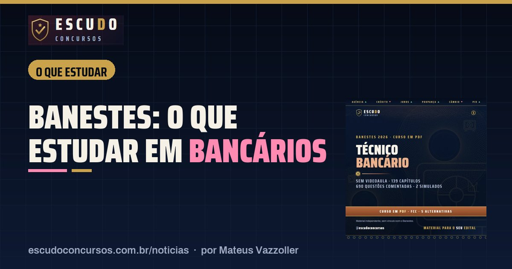

Banestes Técnico Bancário: o que estudar em Conhecimentos Bancários, bloco a bloco, para a prova da FCC
O que estudarPublicado em 16 de novembro de 2026 · por Mateus Vazzoller, ESCUDO Concursos

Conhecimentos Bancários é a maior disciplina da prova do Banestes: são 15 das 70 questões, todas dentro dos Conhecimentos Específicos, que pesam o dobro na nota final. Pela conta do edital, só esse bloco responde por 2,5 dos 10 pontos possíveis. O Anexo IV lista os temas em sequência, sem divisão; aqui eles estão agrupados em 6 blocos, na ordem em que vale a pena estudar, para quem quer vestir o crachá de Técnico Bancário do banco dos capixabas.
| Cargo | Técnico Bancário do Banestes, cadastro de reserva, R$ 4.552,43 |
|---|---|
| Banca | Fundação Carlos Chagas (FCC) |
| Conhecimentos Bancários | 15 das 70 questões, dentro dos Específicos (peso 2) |
| Prova | 24/01/2027, de manhã, 4 horas, cinco alternativas |
| Para ser habilitado | Média ponderada de 6,00, sem mínimo por prova |
| Inscrições | Até 23/11/2026, às 23h59 (boleto até 24/11) |
Quanto Conhecimentos Bancários pesa na nota?
A nota final é a média ponderada das duas provas: Gerais com peso 1 e Específicos com peso 2 (item 11 do edital). Cada questão de Específicos vale uma vez e meia uma questão de Gerais, e Bancários é a fatia maior dos Específicos.
| Disciplina | Questões | Prova | Peso |
|---|---|---|---|
| Conhecimentos Bancários | 15 | Específicos | 2 |
| Vendas, Negociação e Atendimento | 10 | Específicos | 2 |
| Matemática Financeira | 5 | Específicos | 2 |
| Probabilidade e Estatística | 5 | Específicos | 2 |
| Informática e Comportamentos Digitais | 5 | Específicos | 2 |
| Língua Portuguesa, Matemática, Atualidades e Ética | 30 | Gerais | 1 |
Para ser habilitado é preciso média de 6,00, sem nota mínima por prova. Quem vai bem em Bancários ganha folga para compensar uma disciplina fraca dos Gerais.
Os 6 blocos do programa, na ordem de estudo
| Bloco | Temas do Anexo IV | Por que nessa ordem |
|---|---|---|
| 1. Sistema Financeiro Nacional | Estrutura, órgãos normativos, supervisores e operadores; instituições financeiras e instituições de pagamento; regulação e supervisão dos mercados financeiro e securitário | É o mapa do resto: quem manda (CMN), quem fiscaliza (Banco Central, CVM, Susep, Previc) e quem opera |
| 2. Produtos e serviços bancários | Contas, meios de pagamento, crédito, investimentos, cartões e canais de atendimento; captação, intermediação e aplicação de recursos; portabilidade | É o balcão da agência, o que o Técnico Bancário vende e explica todo dia |
| 3. Política monetária e mercado | Copom, taxas de juros, inflação e indicadores econômicos; mercado financeiro e de capitais e seus instrumentos | Conversa com Atualidades do Mercado Financeiro, dos Gerais |
| 4. Inovação | Open Finance, Pix, meios eletrônicos de pagamento e inovação no sistema financeiro | Tema recente, cobrado também em Atualidades |
| 5. Prevenção à lavagem de dinheiro | Lavagem de dinheiro e financiamento do terrorismo; COAF | Rotina de qualquer agência: cadastro, comunicação de operação suspeita |
| 6. Seguros e afins | Noções de seguros; previdência complementar aberta; títulos de capitalização; consórcio; bancassurance; adequação do produto ao perfil do cliente | A parte securitária, que o nome do quadro de provas esconde |
Fecha o programa a Resolução CMN nº 4.966/2021, que trata dos critérios contábeis dos instrumentos financeiros, como a classificação de ativos e a provisão para perdas esperadas no crédito. Leia o texto da resolução com foco nos conceitos principais e nas definições.
A parte de seguros que muita gente pula
O quadro de provas chama a disciplina de "Conhecimentos Bancários", mas o Anexo IV a intitula "Conhecimentos Bancário/Securitários" e dedica cinco temas próprios a seguros, previdência aberta, capitalização, consórcio e bancassurance, além da regulação do mercado securitário. Faz sentido para o cargo: o Técnico Bancário vende os produtos do banco e do Sistema Financeiro Banestes, que tem uma seguradora própria. Quem estuda só a parte bancária deixa de lado um pedaço do programa.
Pontos de seguros para não deixar de fora:
- quem é quem no mercado: seguradora, segurado, beneficiário, corretor, e o papel da Susep;
- princípios do seguro (mutualismo, boa-fé) e a diferença entre seguro de pessoas e de danos;
- PGBL e VGBL na previdência complementar aberta, e o que muda entre eles;
- título de capitalização não é investimento nem seguro: é um produto próprio, com sorteio;
- consórcio: grupo, contemplação por sorteio ou lance, e quem fiscaliza.
O que se repete em outras disciplinas
Sistema Financeiro, Copom, Selic, Open Finance e Pix aparecem duas vezes no edital: em Conhecimentos Bancários e em Atualidades do Mercado Financeiro. Educação financeira e proteção do consumidor aparecem em três disciplinas (Bancários, Atualidades e Vendas). Estude a estrutura uma vez, em Bancários, e deixe para Atualidades só a notícia recente (decisões do Copom, novidades do Pix e do Open Finance). Assim uma hora de estudo serve a duas disciplinas.
Como dividir o tempo dos Específicos?
Uma divisão que segue o número de questões de cada disciplina dos Específicos:
| Disciplina | Parte do tempo dos Específicos | Por quê |
|---|---|---|
| Conhecimentos Bancários | 35% | 15 questões e o programa mais longo |
| Vendas, Negociação e Atendimento | 20% | 10 questões, conteúdo mais intuitivo |
| Matemática Financeira | 20% | 5 questões, mas pede treino de cálculo |
| Probabilidade e Estatística | 15% | 5 questões de cálculo |
| Informática e Comportamentos Digitais | 10% | 5 questões, com LGPD e IA no programa |
No desempate, depois da idade de 60 anos ou mais, vence quem tem mais acertos em Conhecimentos Específicos: mais um motivo para Bancários ficar no topo da lista. O curso Banestes Técnico Bancário segue o Anexo IV tema a tema, com a parte securitária incluída e questões comentadas no formato da FCC.
Curso ESCUDO Técnico Bancário do Banestes em PDF: 139 capítulos e 690 questões comentadas, 2 simulados no formato da prova, de acordo com o edital. De R$ 47 por R$ 37 com o cupom BANESTES37 até 23/11/2026.
Ver o curso
Perguntas frequentes
Quantas questões de Conhecimentos Bancários caem no Banestes?
São 15 questões de cinco alternativas, dentro da prova de Conhecimentos Específicos, que tem 40 questões e peso 2 na nota final.
Seguros caem na prova de Técnico Bancário do Banestes?
Sim. O Anexo IV inclui noções de seguros, previdência complementar aberta, títulos de capitalização, consórcio e bancassurance dentro de Conhecimentos Bancários.
Qual resolução do CMN está no edital do Banestes?
A Resolução CMN nº 4.966/2021, que trata dos critérios contábeis dos instrumentos financeiros. É a única norma citada pelo número em Conhecimentos Bancários.
Leia também
- O que estudarPolicial Penal PE: o que estudar nos Conhecimentos Específicos, as 40 das 60 questões do Cebraspe
16 de novembro de 2026 · Policial Penal PE: as 7 disciplinas dos Conhecimentos Específicos, as leis que o edital cita pelo número e os 3 erros de numeração, para 40 das 60 questões.
- O que estudarO que estudar para Agente Educativo de Aparecida de Goiânia: os 6 itens de Específicos e a conta dos 50 pontos
14 de novembro de 2026 · Agente Educativo de Aparecida: os 6 itens de Conhecimentos Específicos, o Português de nível médio e a conta dos 50 pontos na prova do Verbena/UFG.
Guia completo do concurso: edital, vagas e o que cai · Mais notícias e dicas de concursos